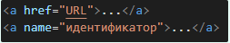
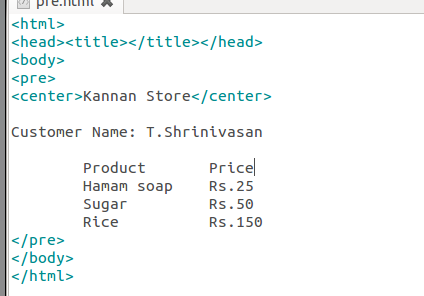

Для создания ссылки необходимо сообщить браузеру, что является ссылкой, а также указать адрес документа, на который следует сделать ссылку. В качестве значения атрибута href используется адрес документа (URL, Universal Resource Locator, универсальный указатель ресурсов), на который происходит переход. Адрес ссылки может быть абсолютным и относительным. Абсолютные адреса работают везде и всюду независимо от имени сайта или веб-страницы, где прописана ссылка. Относительные ссылки, как следует из их названия, построены относительно текущего документа или корня сайта.
Синтаксис:
Прошу заметить, что когда мы используем обычные теги, то все переносы текста игнорируются, можете проверить это сами. А вот чтобы произвести вывод неформатированного текста с сохранением пробелов и особенностей переносов, используется тег <рrе>.